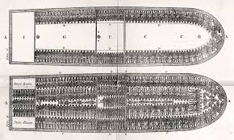

The Growth in Slavery of 1587-1777
by Semira Daniels
During this period of 1587-1777, there has been an major increase of slavery since it's our Masters' only source of profit.
It all started around the early 1500's when John Hawkins, a naval commander had came up with the triangular trade system.
Ever since the English have stolen us from our homes and thrown us on ships to tranport us to a new land for us to do everything for them.
The English had started taking us around 1619.
There was around 250-600 of us on one ship. All of us are coming to this new land.
They had traded us and other raw materials for other people that were referred to as Pequot Indians.

Then the colonists in Massachuesets had made it legal to hold us captive on this new land for many moons in 1641.
By the 1700's on this new land we had dicovered a famililar crop in South Carolina.
The discovery of the crop had made us become overworked. So, the masters had brought more slaves to help with the amount of work.
Next, plaintations were introduced by the South Carolinians.
By 1710, the Europeans were outnumbered to the slaves.
Once the Europeans where outnumbered, the authorities of the Carolinas had started to get involved and they had started lynching, beating, and killing us.
In order to lower our population they had punished us for them to decrease our population therefore they would'nt be the minority.
They had punished us for freedom of movement (gatherings), assembles at funerals, earning money, and the knowledge of how to read or write.
In 1738, Flordia had promised that all the runaway slaves would be free there.
So on September 9th of 1739, a african slave, with the name of Jemmy. Had led a march with over 100 other slaves from Stono, SC to Flordia.
Jemmy and his crew had killed alot of the white men. The event was later called the Stono Rebellion.
Flordia had became the first southern state to abolish slavery, and then Georgia was the last.
Sources:
http://www.pbs.org/wgbh/aia/part1/1narr5.html
https://www.nationalgeographic.org/interactive/slavery-united-states